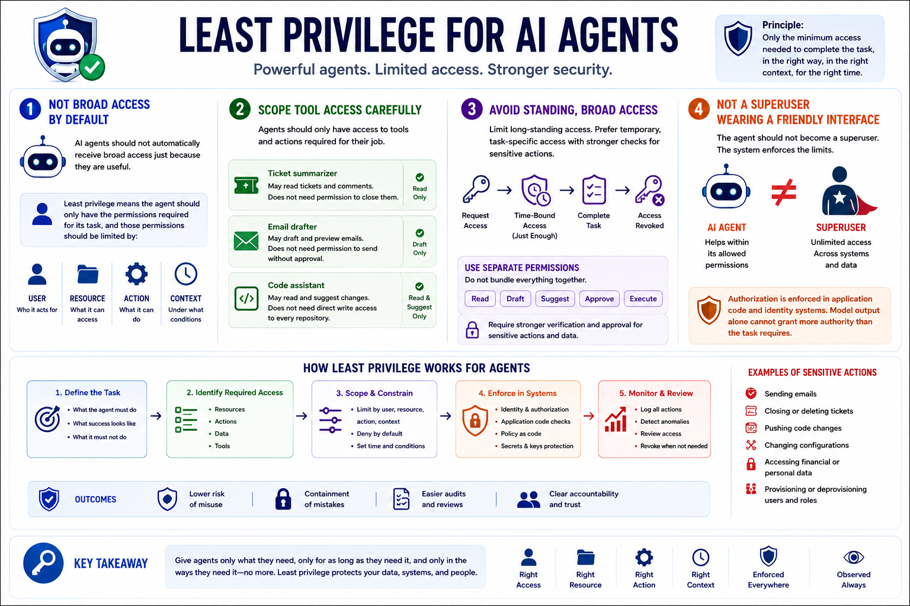

AI Agent Security
Permissions and Least Privilege
Connecting to LMS... Progress: in progress
Version 1.0 | Date: 2026-06-16 | AI agent security guidance evolves quickly. Verify current recommendations against official project, vendor, and security guidance.

Narration
AI agents should not automatically receive broad access just because they are useful. Least privilege means the agent should only have the permissions required for its task, and those permissions should be limited by user, resource, action, and context.
Tool access should be scoped carefully. An agent that summarizes tickets may not need permission to close them. An agent that drafts an email may not need permission to send it without approval. A code assistant may not need direct write access to every repository.
Standing access should be treated with caution. Where possible, give agents temporary, task-specific access and require stronger checks for sensitive actions. Separate read, draft, suggest, approve, and execute permissions instead of treating every capability as one bundle.
The agent should not become a superuser wearing a friendly interface. The system should enforce authorization in application code and identity systems, so model output alone cannot grant the agent more authority than the task requires.